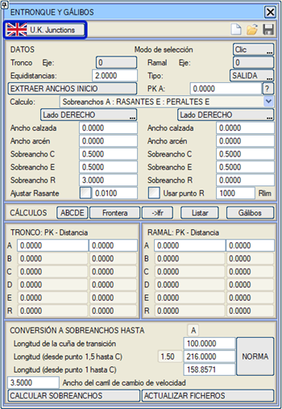
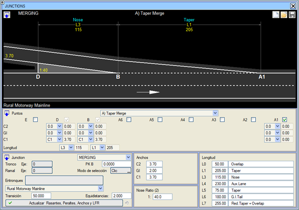
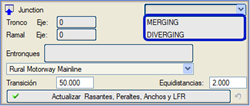
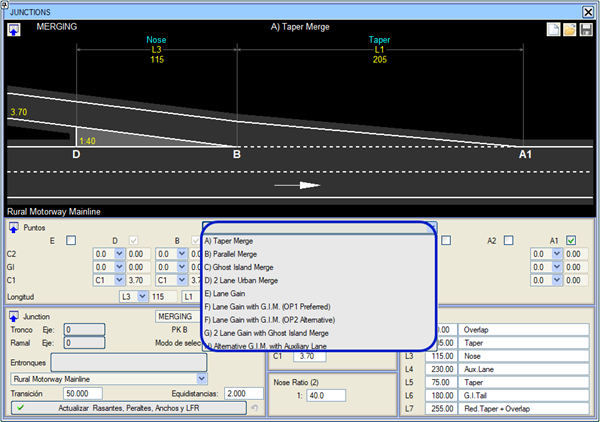

| |
|
İNGİLİZ YÖNETMELİĞİNE GÖRE BAĞLANTILAR
|
Boykesit > Tamamla > Bağlantılar menüsünden, İngiliz yönetmeliğine göre bir bağlantı tanımlamak için diyalog kutusuna erişebiliriz. 
İngiliz yönetmeliği tarzında bağlantıları hesaplamak için bir diyalog kutusu açar. 
Planda kavşak kollarını tanımlarken, ana yolun platform kenarından (kod 2) ayrılmalı (Diverging) veya katılmalıdır (Merging). Burun Oranına (Nose Ratio) karşılık gelen bir teğet ile bağlayıcılar kullanılabilir; örneğin: 1:40 için Teğet= 0.07 ve 1:15 için Teğet= 0.025 Başlangıçta kırmızı kotu ve deveri, geçiş noktaları kullanarak yaklaştırabiliriz. Kavşak kolu sadece sol tarafta genişliklere sahip olacaktır. Eğer iki şeridi varsa, sol tarafın ancho0 ve ancho1 genişliklerini kullanacağız. Genel sekmesinde, ilgili eksenlere UK_TD2206_2006a.den bağlantı tablosu ilişkilendirilmelidir.  JUNCTIONS (KAVŞAKLAR) diyalog kutusunda ana yol ve kavşak kolu seçildiğinde, otomatik olarak Merging (Katılım) veya Diverging (Ayrılma) olup olmadığı ve B noktasının kilometresi belirlenir. Daha sonra yol kategorisini ve her durum için 9 farklı bağlantı tipinden birini seçebiliriz. 
Ayrıca yönetmeliğin sunduğu farklı genişlik ve uzunluk parametreleri de değiştirilebilir. [Kırmızı Kotları, Deverleri, Genişlikleri ve LFR'yi Güncelle] düğmesine basıldığında program şunları hesaplar:
|